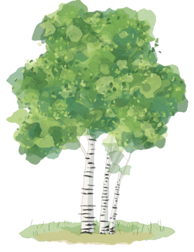

Palaeobiology of malaria
Two or three sentences on your question, the data (ancient and modern genomes?) and your approach.

PhD student · palaeobiology of malaria · University of Copenhagen
I am a PhD student at the University of Copenhagen, working on the palaeobiology of malaria: what ancient DNA and evolutionary models can tell us about the deep history of the parasites, and the hosts, behind one of humanity's oldest diseases.
I trained in bioscience at the University of Oslo, where my master's work in the Ecology and Evolution programme applied ancient DNA and population genomics to Norwegian grey seals. My interests sit where ancient DNA, population genomics, evolutionary biology, biostatistics and evolutionary medicine meet.
My supervisors are Fernando Racimo, Martin Sikora and David Nogués-Bravo.
A short paragraph on your overarching research themes. Keep it readable by someone outside your subfield.
Two or three sentences on your question, the data (ancient and modern genomes?) and your approach.
Two or three sentences on what you asked, what you found, and whether it is published or in preparation.
Ancient DNA Population genomics Evolutionary biology Biostatistics Evolutionary medicine
Underlined name is me. Google Scholar · ORCID
Languages and tools, for example R, Python, Bash, Snakemake, PLINK, ADMIXTOOLS, angsd, bcftools. Methods, for example ancestry modelling, selection scans, Bayesian inference.
you@university.edu
University of Copenhagen, Denmark